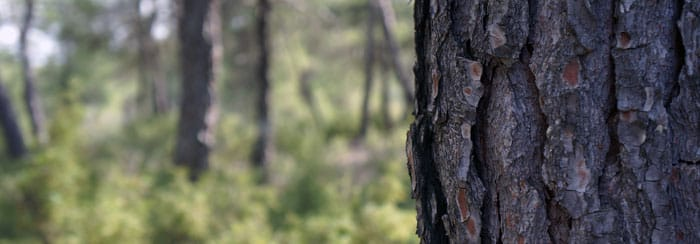

30 de enero de 1947 · Quebradas del Morrón · La Pesquera
La Masacre de La Pesquera
El combate más duro —quizá el más duro y directo— de toda la historia de la Agrupación Guerrillera de Levante. Relato del historiador Salvador F. Cava, extraído de su libro Los Guerrilleros de Levante y Aragón (Ed. Tomebamba, 2007).

El contexto
En el invierno de 1947, la guerrilla del AGLA mantenía varias bases en el término de La Pesquera, en las Quebradas del río Cabriel. La vigilancia de la Guardia Civil se estrechaba sobre las familias de quienes estaban en el monte. El 20 de enero detuvieron a Andrés Ponce Fernández «Andresillo», primo de la mujer de «Fortuna», y bajo palizas lo convirtieron en guía hacia el campamento de la Quebrada del Morrón. Lo que siguió fue un día entero de combate: doce guerrilleros muertos en La Pesquera entre el 30 y 31 de enero, y la represión que se abatió después sobre los pueblos del Cabriel.
El relato de Salvador F. Cava
El trágico combate se produce en el término de La Pesquera, y a más de un revés serán dos seguidos. La zona estaba siendo ya vigilada, aunque no de manera insistente, tanto por la Comandancia de Cuenca como por la de Valencia, que tienen sus límites en las riberas escarpadas del río Cabriel, del que alguna vez dije que era el río más beduino de España; de ahí que en sus informes, con la habitual retórica macabra de los escritos de esos años, aún se consigne una cierta improvisación: «siguiendo la práctica para la localización de bandoleros que en algunas ocasiones han hecho acto de presencia en esta zona». La necesidad de actuación del maquis se basa en tener gente cercana que les facilitase, además de noticias, alimentos. Tal obviedad genérica era bien conocida por todos. De ahí que la vigilancia se estreche sobre las familias de las que se sabía con certeza que alguno de sus miembros se hallaba con los del monte. Esa vigilancia, en este caso, se cierne sobre la familia del «Manco de La Pesquera». Pero con todo, suele ser el soplo de algún chivato el que proporciona los datos útiles para detener a un primer individuo. Así, tras localizar la GC una estafeta denunciada, se detiene hacia el 20 de enero a Andrés Ponce Fernández «Andresillo», de 46 años, primo de Rufina Monteagudo Ponce, la mujer de «Fortuna», y se le lleva al cuartel de Minglanilla. No hacía mucho tiempo que se había incorporado el tercer guerrillero de La Pesquera, «Julio». Como tampoco es difícil imaginar la escena siguiente: Andrés Ponce no pudo resistir la paliza que le diesen y acto seguido se prestó a conducir a los guardias al campamento de los guerrilleros. «Andresillo», «de complexión débil y escasa estatura (1,52 cm.)» contaba con una baza a su favor: la última vez que había estado con ellos suministrándoles había sido en la base de La Olmedilla y no en la Quebrada del Morrón, por lo que esperaba que si llevaba a este último lugar a los guardias los guerrilleros no estarían. Desgraciadamente, lo que no sabía es que los guerrilleros se habían apostado en esta base. Allí se encontraba buena parte del grupo de «Luis» al mando de su segundo «Madriles» («Guitarra»). «Madriles» estuvo precisamente advertido de la detención del primo del «Manco». Ante la ausencia de «Fortuna», por hallarse en la misión de La Mancha, fueron su mujer y su sobrino quienes se desplazarían rápidamente al campamento para comunicarle la noticia. La mujer de «Fortuna» abandonaría el campamento tras dar el aviso, no así «Bienvenido» (Francisco Serrano), que se incorpora al grupo pues entiende que «Andresillo» no tendrá más remedio que delatarlo. Pero, en otra de tantas imprudencias, «Madriles» decide no cambiar de emplazamiento esperando la vuelta de «Luis» y de los que han salido con él hacia Requena para realizar una operación económica.
Hasta el campamento de La Pesquera se había desplazado un verdadero ejército de guardias civiles. Todos los de los puestos limítrofes bajo la órbita de la cabecera de línea de Villanueva de la Jara (Minglanilla, El Herrumblar y Villalpardo), y también la unidad móvil enviada desde Cuenca al mando del todavía sargento Isidoro Arenas Rubio con diez guardias, más otros tantos que recogió a su paso por Enguídanos. A todos ellos los manda el teniente Camilo Pajuelo hasta la llegada más tardía del propio teniente coronel Jesús Miranda Guerra, que estableció su puesto de mando en la Casa de las Hoyas. En esta marcha nocturna el guía y parapeto, lo que le costará la vida tras las primeras descargas de munición, era el propio «Andresillo».
El jueves día 30 de enero, de madrugada —táctica habitual desde esta fecha en el enfrentamiento con los guerrilleros—, después de haberse aproximado al lugar en larga, silenciosa y nocturna caminata para no despertar sospechas ni entre la población ni en la vigilancia establecida, se acercaron hasta la chabola donde se cobijaban unos doce guerrilleros, según la memoria interna, sita en el barranco de Los Berciales. En el dispositivo fueron formados dos grupos con un total de 45 guardias: uno al mando del teniente Pajuelo y el segundo a cargo del sargento Arenas. Se dispuso que el enlace fuera al frente de uno de ellos, vigilado de cerca por el omnipresente y tal vez más despiadado de los guardias de la contrapartida conquense, Isidoro Arenas Rubio.
El entonces guardia Felipe Rubio Montalbán, que participó en el asalto, recrea años después —siendo brigada jefe de la línea de Archena— así su desarrollo: «El día 29 de enero de 1947, teniendo conocimiento el mando de la 103 Comandancia de Cuenca de que en el pueblo de La Pesquera, demarcación del puesto de Minglanilla, se hallaba instalado el campamento de bandoleros, fue organizada una batida al monte, concentrándose al efecto un grupo de fuerza de unos treinta individuos procedentes del puesto de la capital, puestos limítrofes al efecto y plantilla de éste, del que formaban parte dos sargentos y varios cabos que, al mando del teniente jefe de la línea don Camilo Pajuelo Arteaga, se trasladaron por la noche de dicha fecha caminando a pie por el monte hasta las inmediaciones de la partida en que se suponía que estaba el campamento, dando comienzo la batida a los primeros claros a la luz del día 30 del dicho mes y año. Coincidiendo la salida del sol, el primer contacto con los bandoleros: ordenando el citado oficial la formación de dos grupos con la fuerza antes mencionada, que llevaron a efecto inmediatamente el cerco de los forajidos, que resultaron estar acampados en el lugar conocido como Fuente de la Olmedilla, punto muy estratégico por lo accidentado del terreno y abundante maleza, sito a unos cuatro kilómetros del citado pueblo de La Pesquera. […] Transcurridos unos treinta minutos y percatados los bandoleros de que aquel sector era el único punto por donde no se les hacía disparos, creyendo no estuviera cubierto intentaron la huida, organizando a tal fin una descubierta que la llevaron a efecto dos componentes de la partida, los que venían avanzando y disparando a intervalos con sendos fusiles. […] Más tarde el oficial de referencia ordenó ir estrechando el cerco a los restantes bandoleros, los que, bien parapetados en las defensas naturales del terreno y disponiendo de abundantes municiones, se defendían con fuego de metralla, fusiles que resultaron ser checos, logrando dejarlos a todos fuera de combate a la hora de la puesta del sol de la indicada fecha, sin lamentar bajas por parte de la fuerza del cuerpo, excepto el sargento Isidoro Arenas Rubio, que fue evacuado con heridas de carácter leve, producidas por la explosión de una granada de Lafitte que lanzó el propio suboficial y que, por enredarse la cinta en una rama de un pino, le cayó a escasa distancia. […] A consecuencia de este servicio fueron concedidas condecoraciones a los mandos referidos». Fue algo parecido, pero se olvidan detalles valiosos.
La guardia nocturna sí estaba montada. Al ser pleno invierno, y con el campamento en un barranco, lo que remarca su oscuridad, hizo que hasta que no estuvieron muy encima de las chabolas situadas entre dos montículos no se dieran cuenta de la presencia de las fuerzas atacantes. Una vez dada la voz de alarma, sobre las siete de la mañana, empezó lo que fue un durísimo combate con bombas y ráfagas de metralleta y fusiles, y huida de la mitad de los guerrilleros en cuanto tuvieron ocasión. Las primeras bajas fueron de parte atacante: murió el enlace que les acompañaba, contabilizado después como guerrillero, y resultó herido grave el sargento al explotarle bien cerca una de las bombas de mano lanzadas por él mismo. El sargento Arenas tuvo que ser inmediatamente evacuado a La Pesquera en una caballería y trasladado después al hospital de Cuenca, donde se restableció, curó de sus heridas, fue condecorado y continuó su labor de caza y captura de los guerrilleros conquenses, además de sus malandanzas con disfraz de maqui en la contrapartida que a partir de este año dirigiría. El combate continuó hasta las cinco de la tarde. Todo un día de luz invernal. Los guerrilleros intentaron huir, pero ya se había establecido el cerco. Con todo, el matorral espeso posibilitó que se desplegaran y que al menos dos, con seguridad («Bartolo» y «Bienvenido»), sortearan el asedio. Los restantes repelieron y aguantaron el ataque individualmente, como verdaderos héroes. En La Pesquera todavía se recuerdan las palabras groseras y los gritos biliosos que pegó el teniente coronel de Cuenca cuando llegó, tarde, al lugar y vio que todavía estaban en pleno combate. Con la anochecida, a partir de las 18 horas, se hizo recuento de bajas: cuatro heridos por parte de los guardias —el sargento Isidoro Arenas, con múltiples heridas de metralla en el cuerpo y en el rostro; el teniente Pajuelo, en el dedo índice de la mano derecha; el cabo Longinos Alonso López, por heridas leves de metralla; y los guardias José Salguero Banderas y Francisco García López, por rozaduras de bala—, todo ello diagnosticado por el médico de Minglanilla, Santiago López Malla.
Por parte de los guerrilleros, además del enlace Andrés Ponce Ferrándiz «Andresillo», hubo cinco fallecidos. Dos de ellos fueron Fidel Villena Pérez «Julio» (que en varios libros se le confunde con el madrileño muerto en Andorra, Teruel, de nombre Julio Pérez), de 21 años, natural de la Aldea del Cañaveral (Mira), cuñado de «Salvador» y de «Cristóbal», quien se había incorporado el día 1 de noviembre; otro de ellos era el jefe del campamento, «Guitarra» («Pepito el Madriles»); y los otros tres sin identificar a fecha de hoy, aunque uno de ellos con seguridad se trata de Vicente Boix. Los tres, según declara el «Manco» —tal vez la aproximación más exacta a la verdad para una posible identificación—, recién incorporados desde Valencia y que provenían de Madrid, lo que indica su relación con las detenciones que se estaban produciendo en las dos capitales. Tan sólo se salvaron, al menos, «Bienvenido» y «Bartolo».
El primer intento de identificación de los cadáveres se haría el día 31 a las once horas en el lugar donde se efectuó el asalto, la Quebrada del Morrón, por el juez de paz de La Pesquera Augusto López López. Los cadáveres, totalmente desfigurados y masacrados por los disparos y bombas a discreción, fueron llevados hasta el cementerio de La Pesquera, donde se les practicó la autopsia el día 1 de febrero por los médicos de Motilla, Campillo, Minglanilla y Puebla del Salvador: Vicente Vega Redondo, Ramón Canal Pérez, Santiago López Malla y Pedro Aramburu González, respectivamente. Así lo exigía la norma. Los cuerpos estaban literalmente acribillados. Los tres fallecidos sin identificar era gente muy joven, de unos veinte años de edad.
La fortuna, aliada con lo que según se comentó en la propia guerrilla fue una falta de previsión, hizo que el grupo del Estado Mayor, con «Rodolfo» a la cabeza —compuesto además por el escribiente «Fernando el Pecas» (Salvador Peiró Ferragut), el enlace «Chispa» (Manuel Ramírez Risueño), «Peñaranda» (Marcelino Fernández García) y Francisco López Descalzo, que recién se incorporaba desde Iniesta—, se diera de bruces con un dispositivo de guardias. Su exceso de confianza, que conllevó que no supiesen que también este campamento, una cueva junto al río Cabriel, había sido asaltado y sus ocupantes, el grupo de «Ventura», habían tenido un fuerte enfrentamiento antes de poderlo abandonar y ponerse todos a salvo, les pasó factura. La vigilancia y el recorrido de todas aquellas vertientes se mantenía operativa, y a ambos lados del río. Los guardias sorprendieron a los cinco guerrilleros cuando se aproximaban: «Rodolfo», «Chispa» y «El Pecas» fallecerían, en tanto que «Peñaranda» y el joven de Iniesta se volverían al pueblo de donde habían partido.
De resultas del enfrentamiento, los informes oficiales dan a creer que se había liquidado a todos los guerrilleros tanto en un encuentro como en otro, pero en realidad más de la mitad pudieron escaparse. Lo que sí sucedió a continuación es la acción previsible del servicio de información en los aledaños para capturar a cualquier persona que los hubiese visto y no denunciado, que los hubiera tenido alojados, o que ocasionalmente les proporcionara abastecimiento. Daba igual fuese quien fuese. Era cuestión de ir escrutando con lupa los documentos intervenidos en los macutos, las confidencias de las autoridades falangistas, o bien las declaraciones de los que por estos motivos se fueran conduciendo a los calabozos municipales. Así, por ejemplo, se supo que desde La Pesquera el secretario municipal había facilitado salvoconductos: varios de ellos aparecieron entre los enseres de «Bienvenido», e incluso, en las referencias orales, se señala que le encontraron un listado con los enlaces del pueblo. La redada de principios de febrero llevó a la cárcel a más de sesenta vecinos de La Pesquera, Iniesta, Villalpardo, Mira, Camporrobles y Minglanilla, y supondrá el desarme completo de la ayuda a la guerrilla en la comarca.
Las víctimas
En dos enfrentamientos sucesivos —la Quebrada del Morrón y la cueva de La Fonseca— y en los días siguientes, murieron doce personas vinculadas a la guerrilla, más el guarda Dionisio Alcarria Rubio, ahorcado el 1 de febrero de 1947:
- Andrés Ponce Fernández «Andresillo», 46 años, enlace, primo político del «Manco». Usado como escudo en el asalto.
- Fidel Villena Pérez «Julio», 21 años, natural de la Aldea del Cañaveral (Mira).
- «Guitarra» («Pepito el Madriles»), jefe del campamento.
- Vicente Boix y otros dos guerrilleros sin identificar, de unos 20 años, recién llegados de Valencia y Madrid.
- «Rodolfo», «Chispa» (Manuel Ramírez Risueño) y «Fernando el Pecas» (Salvador Peiró Ferragut), del Estado Mayor, muertos en La Fonseca.
- Dionisio Alcarria Rubio, guarda del Pozo de la Llave, ahorcado en Mira.
Sobrevivieron, entre otros, «Bienvenido» (Francisco Serrano, sobrino del Manco) y «Bartolo», que sortearon el cerco. La mujer del Manco, Rufina Monteagudo, evacuada vía Valencia a Barcelona; su sobrino permaneció en la guerrilla con el nombre de «Bienvenido».
«Al andar se hace camino y al volver la vista atrás se ve la senda que nunca se ha de volver a pisar» — pero no olvidar. La Ruta del Manco, sobre los caminos que recorrieron los cuerpos